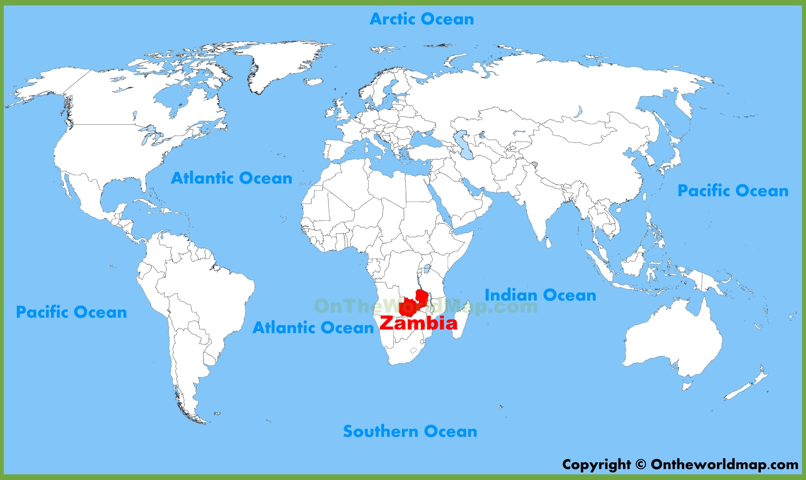

Hello!, Im Adil.
A students at staffordshire university
Currently based in Stoke-on-Trent studying computer science.
Since the inception of the computer, the world has radically transformed from business to the human body. The things that we are not doing with such great potential is what drives me to want to do more. Taking up physics, chemistry, math and geography at A-level have helped me in learning the basics in how computers function and how they can be implemented in the real world. With the skills I gained from school and the vast amount of data available on the internet I was able to develop my skills with which I had put into use as I endeavoured in personal projects including, a couple basic swift and objective c applications. Studying further in the field of technology, I hope to further my ambition to help alleviate the difficulties that are posed upon the less fortunate as well as improve on technologies that already exist.
More about me!
Find out more about zambia
As an aspiring student in the year 2018 I have always been surrounded by technology. It has fascinated me how simply these technologies have integrated into our daily lives and have always wondered how they really work. As I grew older and more understanding with the help of schooling, my fondness for technology grew with me as discovering new technologies and how they worked became a hobby. I also want to study in the field of technology because the demand for jobs that are related to technology is growing at a ever fast rate, due Mo to the fact technology is being integrated into every aspect of our life. The simplest of objects have technology integrated into them and the need for technology to advance at a faster rate is affecting the demand for jobs that are related to it.
They will also need access to clean water, meat-based cat food and regular grooming as well as private access to a litter tray which should ideally be replaced once a week.
Some of my hobbies
- Table tennis
- playing football
- Swimming
- gym